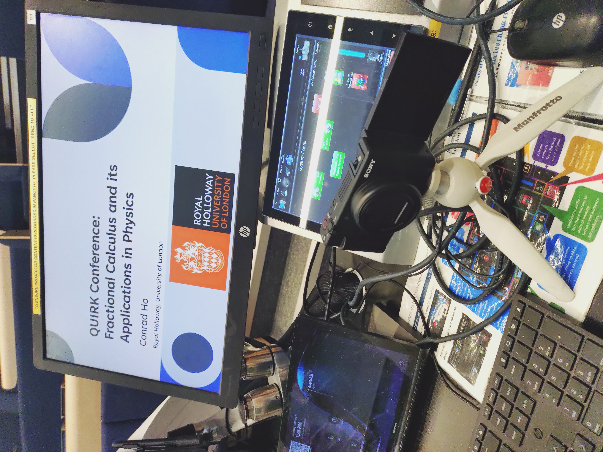
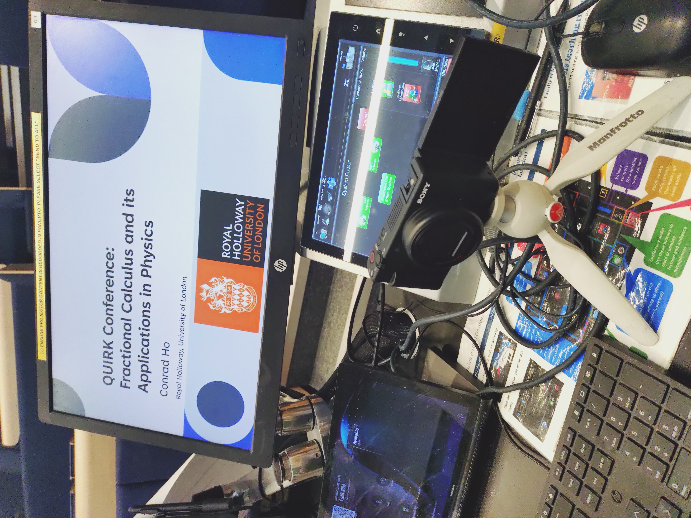

During my 1st year, I attended two undegraduate conferences including the QUIRK conference and CuWiP+ conference held in Imperial College London and University of Warwick respectively.
QUIRK Conference
QUIRK Conference is an undegraduate physics conference held by 5 insitutions' Physics society including:
- Queen Mary University of London (QMUL)
- University College London (UCL)
- Imperial College London (ICL)
- Royal Holloway University of London (RHUL)
- Kings College London (KCL)
 

During the Conference, I also made a keynote presentation about Fractional Dynamics - A similar presentation can be found with my PH1150 Talk
CuWiP+
CuWiP+ stands for Conference for Undegraduate Women and Non Binary People in Physics. During this conferences held in Warwick, we had oppurtunities to socialise with others fellow WiP+, attend keynote presentations etc. - I also had the pleasure of meeting Dame Jocelyn Bell Burnell!